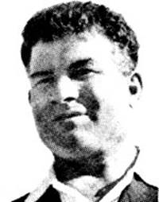
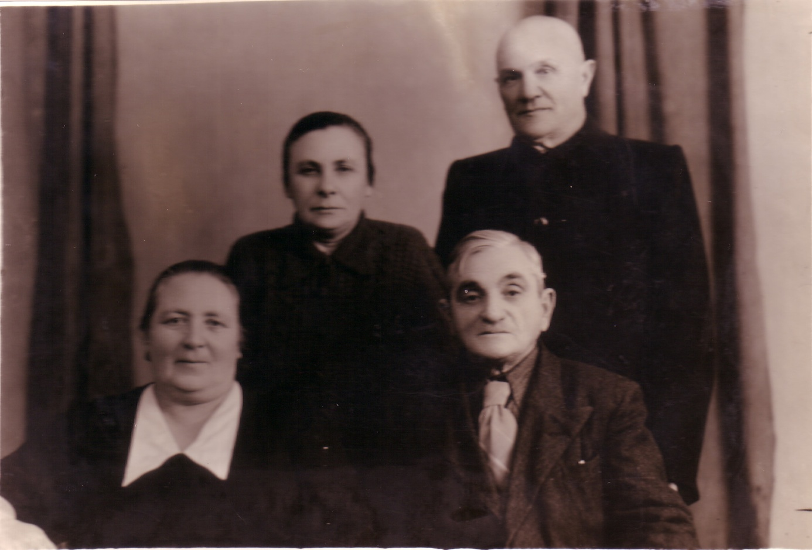
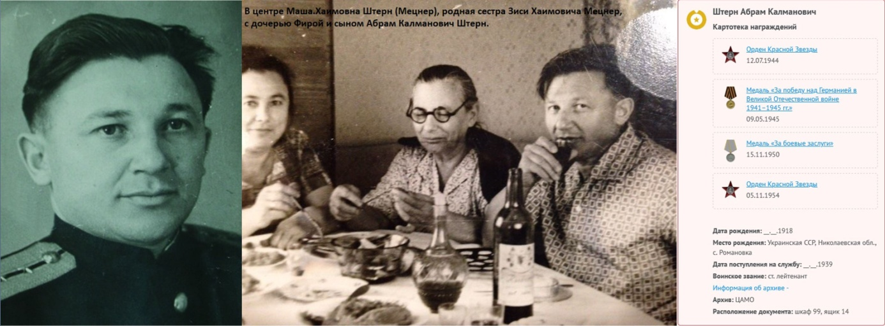
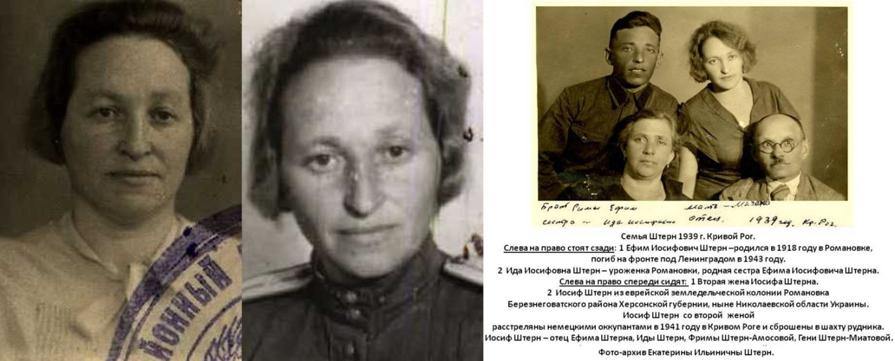
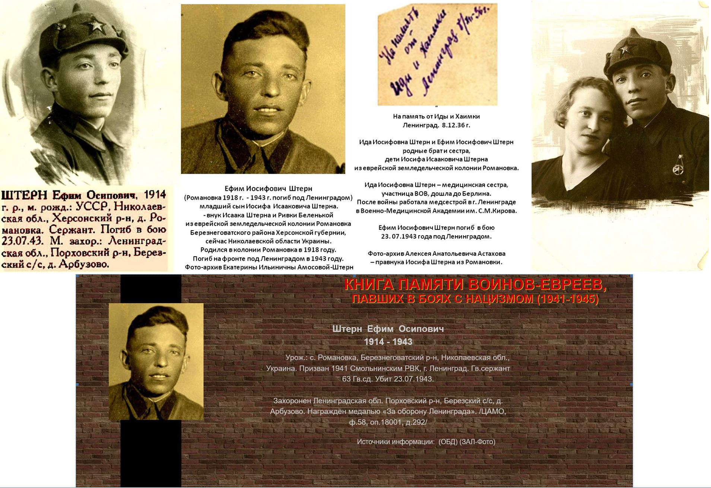
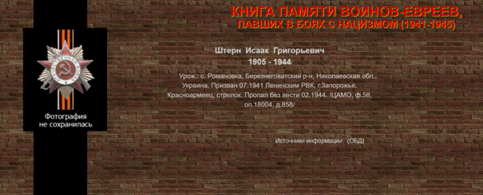
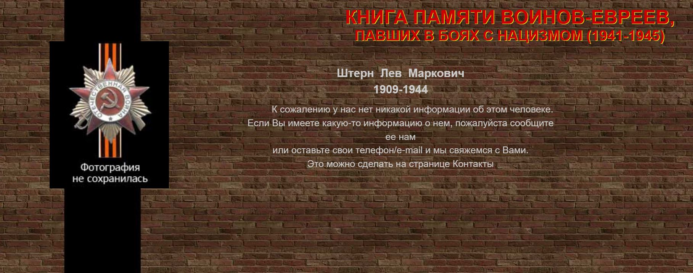

|
Зархи Меер

Родители - Эстер-Либи и Мордехай
Штерн. Родился 17/4/1899 в колонии Романовка, одной из еврейских колоний
в Южной России, в большой крестьянской семье. В детские годы впитал
традиционные семейные идеалы и природную крестьянскую привязанность к
земле. Детство провел на берегу реки и на просторах полей.
В1919 был
среди организаторов организации 'Халуц' Южной
России, год спустя присоединился к группе "Волжский пост", с
которой отправился в Палестину в начале 1922 года. Путь лежал через
сельхоз-колонию в Коче - "Новый
путь", служившей подготовительной базой для репатриантов.
В
августе 1922 прибыл наконец-то в Палестину и вместе с прибывшими с ним
друзьями присоединился к группе образовавшей кибуц Гнигер,
был среди основателей и строителей кибуца. Инструктировал группы
поселенцев, организовавших кибуцы Маапилим(Неве
Ям) и Мацуба.
Со дня
прибытия был активистом партии 'Ахдут а-Авода' и затем в Рабочей партии Палестины.
Был
известен как человек вспыльчивого характера и доброго сердца,
простой в общении и готовый к
тяжелым испытаниям. Вместе с тем был физически крепким, широкоплечим и с
быстрой, широкой походкой.
Во
время беспорядков в Палестине 1938 года был на самых опасных участках. В
предвоенный период был командирован Профсоюзом в Галицию , где продолжал
сионистскую работу среди молодежи.
В
1945-6 гг после Второй Мировой войны находился
на юге Италии, как координатор молодежи, среди беженцев уцелевших в холокосте, обьединненых
в организацию 'Халуц'.
6/4/1946 в возрасте 47 лет
погиб в автокатастрофе во время
поездки из города Бери в коммуну Гордония.
Похоронен в Италии, а затем перезахаронен в
Израиле, кибуц Гнигер. Оставил жену и троих
детей.
Кибуц Гнигер выпустил книгу о его жизни, о нем написано в
книге Центра Диаспоры Италии.
сайт
Минестерства обороны Израиля
Штерин(Штерн) Кольман(Калман) Нахимович(Нахманович)

Стоят: Маша Хаимовна Штерн(Мецнер) и Калман Нахманович Штерн
Сидят: Лея Фишелевна Мецнер(Пайкина) и Зися Хаимович Мецнер
(все уроженцы колонии
Романовка).
Штерин Кольман
Нахимович
ранен/контужен, Выбыл: д. Хоцымеж, Место рождения: Херсонская губ., Херсонский уезд,
Калужская вол., с. Романовка, Место службы: 9-й Заамурский
пограничный пехотный полк, рядовой, Дата события: 15.07.1916
Именные списки потерь
Штерин Кольман Нахимович
Ранен/контужен. Именные
списки потерь
— Список потерь —
Должность/Звание
рядовой
Воинская часть
9-й Заамурский
пограничный пехотный полк
Место рождения
Херсонская губ., Херсонский
уезд, Калужская вол., с. Романовка
Причина выбытия
ранен/контужен
Место выбытия
д. Хоцымеж
Дата события
15.07.1916
Тип документа
Именные списки потерь
Архив
Российский Государственный Военно-исторический
архив
Фонд
№16196, Особое
делопроизводство по сбору и регистрации сведений о выбывших за смертью
или за ранами, а также пропавших без вести воинских чинах, действующих
против неприятельских армий (1914 - 1918)
Опись
№1, Именные списки потерь
солдат и офицеров 1 мировой войны 1914-1918 гг. (по полкам и бригадам)
Дело
Списки потерь солдат 9 Заамурского пограничного пехотного полка
Документ
№170545, Список воинских
чинов 9 Заамурского пограничного пехотного
полка убитых, раненых и контуженных с 8 по 24 июля 1916 г., Автор: 9-й Заамурский пограничный пехотный полк, 1916-10-02
Штерн Абрам Калманович

Штерн Абрам Калманович, Штерн Фира Калмановна, Штерн(Мецнер) Маша Хаимовна,
Штерн Абрам Калманович. (все уроженцы колонии
Романовка).
Штерн Абрам Калманович
Год рождения: 18.08.1918
Место рождения: колония
Романовка, Березнеговатского района,
Николаевской области, Украина.
Воинское звание: лейтенант; ст. лейтенант; капитан
1 ранга
Дата поступления на службу
__.08.1937
Место призыва Кагановичский РВК, Украинская ССР, г.
Харьков, Кагановичский р-н
Должности
: пом. Командира КЛ «Московский Комсомол»
Награды:
Ордена:
« Красной Звезды» 12.07.1944
« Красной Звезды» 05.11.1954
« Отечественной войны ll степени »
06.04.1985
Медали:
«За боевые заслуги» 15.11.1950
«За победу над Германией в Великой
Отечественной войне 1941–1945 гг.»
Из наградного
листа:
Старший лейтенант Штерн участвовал в 20 операциях по высадке
диверсионных и разведывательных групп на побережье противника, а так же
при отражении многочисленных атак авиации противника, проявил при этом
мужество и личную храбрость.
Во время высадки десанта
в районе Чалмужской губы 17.06 44 года, в
сложных метеорологических условиях при 8-ми бальном ветре тов. Штерн
обеспечил быструю высадку десанта.
В боях за овладение
города Петрозаводск, а так же во время высадки десанта в Уйскую губу 28 июня 1944г. Тов. Штерн проявил умение и организаторские
способности, чем обеспечил быстрейшую высадку десанта и их имущества на
берег противника без потерь личного состава, а так же обеспечил
командование операцией точными данными расчетов для маневрирования.
Данные из УПК (учётно - послужной карты,
портал "ПАМЯТЬ НАРОДА").
Дата рождения
18.08.1918; __.__.1918
Место рождения
Украинская
ССР, Николаевская обл., с. Романовка; Украинская ССР, Николаевская обл., Березнеговатский р-н, с. Романовка; Белорусская ССР,
Минская обл., Слуцкий окр., Слуцкий р-н, Козловичский с/с, д. Козловичи
Дата поступления на службу
__.08.1937
Место призыва
Кагановичский РВК, Украинская ССР, г.
Харьков, Кагановичский р-н
Воинское звание
ст. лейтенант; лейтенант
Воинская часть
КЛ "Московский
Комсомол" ДКЛ ОВФл; ВС
СОВО; КЛ "Московский комсомолец" ДКЛ КаспФ
Наименование награды
Орден Красной Звезды
Медаль «За победу над Германией в Великой Отечественной войне 1941–1945
гг.»
Медаль «За боевые заслуги»
Орден Отечественной войны II степени
Штерн Абрам Калманович
Учетно-послужная картотека
Дата рождения: 18.08.1918
Место рождения: Белорусская ССР, Минская обл., Слуцкий окр., Слуцкий р-н, Козловичский
с/с, д. Козловичи
Дата поступления на
службу: __.08.1937
Воинское звание: лейтенант
Наименование воинской
части: ВС СОВО,КЛ "Московский комсомолец" ДКЛ КаспФ
Дата окончания службы: 26.04.1941
Информация об архиве -
Источник информации: ЦАМО
Номер шкафа: 264
Номер ящика: 10
Штерн Абрам Калманович
Списки призыва и
демобилизации
Дата рождения: 18.08.1918
Место рождения: Украинская ССР, Николаевская обл., Березнегорский р-н, с.
Романовка
Дата призыва: __.05.1942
Место призыва: Петродворцовый
РВК
Воинское звание: капитан 1 ранга
Информация об архиве -
Источник информации: ВК г. Санкт-Петербурга
Фонд ист. информации: Петродворцовый
РВК
Дело ист. информации: 20000019
Страница героя на проекте:
Книга памяти
блокадного Ленинграда
Наградные документы:
Штерн Абрам Калманович
Орден Красной Звезды
Наградной документ
Дата рождения: __.__.1918
Дата поступления на
службу: __.__.1938
Место призыва: Кагановичский
РВК, Украинская ССР, г. Харьков, Кагановичский р-н
Воинское звание: ст. лейтенант
Воинская часть: КЛ "Московский Комсомол" ДКЛ ОВФл
Даты подвига: 17.06.1944, 28.06.1944
Наименование награды: Орден Красной Звезды
Приказ подразделения
№: 245 от: 12.07.1944
Издан: ОВФл
Информация об архиве -
Архив: ЦВМА
Фонд ист. информации: 3
Опись ист. информации: 1
Дело ист. информации: 781, 930
Штерн Абрам Калманович
Орден Красной Звезды
Наградной документ
Дата рождения: __.__.1918
Воинское звание: ст. лейтенант
Кто наградил: Президиум ВС СССР
Наименование награды: Орден Красной Звезды
Дата документа: 05.11.1954
Информация об архиве -
Архив: ЦАМО
Картотека: Картотека награждений
Расположение документа: шкаф 99, ящик 14
Штерн Абрам Калманович
Орден Отечественной войны II степени
Документ в юбилейной
картотеке
Дата рождения: __.__.1918
Место рождения: Украинская ССР, Николаевская обл., Березнеговатский р-н, с.
Романовка
Наименование награды: Орден Отечественной войны II степени
Номер документа: 80
Дата документа: 06.04.1985
Автор документа: Министр обороны СССР
Информация об архиве -
Архив: ЦАМО
Картотека: Юбилейная картотека награждений
Расположение документа: шкаф 62, ящик 23
Штерн Абрам Калманович
Медаль «За боевые заслуги»
Наградной документ
Дата рождения: __.__.1918
Воинское звание: ст. лейтенант
Кто наградил: Президиум ВС
СССР
Наименование награды: Медаль «За боевые заслуги»
Дата документа: 15.11.1950
Информация об архиве -
Архив: ЦАМО
Картотека: Картотека награждений
Расположение документа: шкаф 99, ящик 14
Штерн Абрам Калманович
Медаль «За победу над Германией в Великой Отечественной войне
1941–1945 гг.»
Наградной документ
Дата рождения: __.__.1918
Воинское звание: ст. лейтенант
Кто наградил: Президиум ВС
СССР
Наименование награды: Медаль «За победу над Германией в
Великой Отечественной войне 1941–1945 гг.»
Дата документа: 09.05.1945
Информация об архиве -
Архив: ЦАМО
Картотека: Картотека награждений
Расположение документа: шкаф 99, ящик 14
Штерн Ида Иосифовна

Штерн Ида
Иосифовна
Год рождения: 25.08.1913
Место рождения: колония
Романовка, Березнеговатского района,
Николаевской области, Украина.
Воинское звание: капитан мед. Сл.
Дата поступления на службу: 27.06.1941
Годы службы: __.__.1941 - __.__.1951
Место призыва Выборгский РВК, Ленинградская обл., г.
Ленинград, Выборгский р-н
Должности
:
Награды:
Ордена:
« Отечественной войны II
степени » 06.04.1985
Медали:
«За оборону Советского
Заполярья»
«За боевые заслуги» 19.11.1851
«За победу над Германией в Великой
Отечественной войне 1941–1945 гг.»
Данные из УПК (учётно - послужной
карты, портал "ПАМЯТЬ НАРОДА").
Штерн Ида
Иосифовна
Учетно-послужная картотека
Дата рождения: 25.08.1913
Место рождения: Украинская ССР, Херсонская обл., Березниговатский р-н, с.
Романовка
Наименование военкомата: Выборгский РВК, Ленинградская
обл., г. Ленинград, Выборгский р-н
Дата поступления на
службу: 27.06.1941
Воинское звание: капитан мед. сл.
Наименование воинской
части: штаб 14 армии КарФ, ЭП 121 ГСОВГ 1 БелФ
Дата окончания службы: 08.04.1956
Награды: Медаль «За оборону Советского
Заполярья», Медаль «За победу над Германией в Великой Отечественной войне
1941–1945 гг.»
Информация об архиве -
Источник информации: ЦАМО
Номер шкафа: 237
Номер ящика: 3
Страница героя на проекте:
Книга памяти блокадного
Ленинграда
Штерн Ида
Иосифовна
Записи из
ГУК
Дата рождения: 25.08.1913
Место рождения: Херсонская область село Романовка
Дата призыва: 1941
Воинское звание: капитан медицинской службы
Штерн Ида
Иосифовна
Картотека медицинских работников
Дата рождения: 25.08.1913
Воинское звание: капитан мед. сл.
Годы службы: __.__.1941 - __.__.1951
Информация об архиве -
Раздел: Картотека медицинских работников
Наградные документы:
Штерн Ида
Иосифовна
Медаль «За оборону Советского Заполярья»
Представление на награждение
Воинское звание: лейтенант медслужбы
Воинская часть: ГПЭП 121 14 А,
19 А
Наименование награды: Медаль «За оборону Советского Заполярья»
Информация об архиве -
Архив: ЦАМО
Фонд ист. информации: 35255
Опись ист. информации: 25255
Дело ист. информации: 16
Штерн Ида
Иосифовна
Медаль «За боевые заслуги»
Наградной документ
Воинское звание: капитан мед. сл.
Наименование награды: Медаль «За боевые заслуги»
Приказ подразделения
№: 215/200 от: 19.11.1851
Издан: Президиум ВС СССР
Информация об архиве -
Архив: ЦАМО
Фонд ист. информации: 033
Опись ист. информации: 0170418сс
Дело ист. информации: 0286
Штерн Ида
Иосифовна
Орден Отечественной войны II степени
Документ в юбилейной
картотеке
Дата рождения: __.__.1913
Место рождения: Украинская ССР, Херсонская обл., Березниговатовский р-н, с.
Романовка
Наименование награды: Орден Отечественной войны II степени
Номер документа: 176
Дата документа: 06.11.1985
Автор документа: Министр обороны СССР
Информация об архиве -
Архив: ЦАМО
Картотека: Юбилейная картотека награждений
Расположение документа: шкаф 62, ящик 23
Штерн Ефим Иосифович

Штерн Ефим Иосифович
Год рождения: __.__.1914
Место рождения: колония
Романовка, Березнеговатского района,
Николаевской области, Украина.
Воинское звание: сержант
Дата поступления на службу
22.06.1941
Место призыва Смольнинский РВК, Ленинградская
обл., г. Ленинград, Смольнинский р-н
Награды:
Ордена:
Медали: «За оборону Ленинграда» 02.06.1943
Данные из УПК (учётно - послужной
карты, портал "ПАМЯТЬ НАРОДА").
Штерн Ефим Иосифович
Военно-пересыльные пункты и
запасные полки
Дата рождения: __.__.1914
Место рождения: Украинская ССР, Николаевская обл.,
Херсонский р-н, Ромпиновский с/с,
с. Ромпиновка
Дата призыва: 22.06.1941 Смольнинский
РВК, Ленинградская обл., г. Ленинград, Смольнинский
р-н
Дата призыва: 22.06.1941
Воинское звание: сержант
Последнее место службы: 2 полк ВНОС
Военно-пересыльный пункт: Ленинградский ВПП
Прибыл в часть: 15.10.1941
Выбытие из воинской
части: 16.10.1941
Куда выбыл: 2 корп. ПВО
Откуда прибыл: ЭГ 694
Номер команды: 863
Информация об архиве+
Страница героя на проекте:
Книга памяти
блокадного Ленинграда
Наградные документы:
Штерн Ефим Осипович
Медаль «За оборону
Ленинграда»
Наградной документ
Воинское звание: гв. сержант
Воинская часть: 190 гв. сп
Наименование награды: Медаль «За оборону Ленинграда»
Приказ подразделения
№: 59/ОТЧ от: 02.06.1943
Издан: 190 гв. сп
Информация об архиве -
Архив: ЦАМО
Фонд ист. информации: 424
Опись ист. информации: 10247
Дело ист. информации: 54
Страница героя на проекте:
Книга памяти
блокадного Ленинграда
Донесения о потерях
Штерн Ефим Осипович
Донесение о безвозвратных
потерях
Дата рождения: __.__.1914
Место рождения: УССР, Херсонская обл., Березнеговатский р-н, д. Романовка
Дата призыва: __.__.1941, Смольнинский
РВК, Ленинградская обл., г. Ленинград, Смольнинский
р-н
Дата призыва: __.__.1941
Воинское звание: гв. сержант
Последнее место службы: 63 гв. сд
Дата выбытия: 23.07.1943
Причина выбытия: убит
Первичное место
захоронения: Ленинградская обл., Мгинский
р-н, п. Арбузово, северо-восточнее, 200 м
Информация об архиве -
Источник информации: ЦАМО
Фонд ист. информации: 58
Опись ист. информации: 18001
Дело ист. информации: 292
Страница героя на проекте:
Книга памяти блокадного
Ленинграда
ШТЕРН Ефим Осипович
Печатная Книга Памяти
Дата рождения: __.__.1914
Место рождения: Tкраинская
ССР, Николаевская обл., Херсонский р-н, д. Романовка.
Дата выбытия: 23.07.1943
Первичное место
захоронения: Ленинградская обл., Порховский
р-н, Березский с/с, д. Арбузове
Информация об архиве -
Источник информации: Книга памяти. г. Ленинград. Том 14
Штерн Иссак
(Исаак) Григоревич

Штерн Иссак
(Исаак) Григоревич
Донесения о потерях
Штерн Иссак
Григоревич
Документ, уточняющий потери
Дата рождения: __.__.1905
Место рождения: Украинская ССР, Одесская обл.,
Березовский р-н, с. Романовка
Дата призыва: __.07.1941 Ленинский РВК, Украинская
ССР, г. Запорожье, Ленинский р-н
Дата призыва: __.07.1941
Воинское звание: красноармеец
Дата выбытия: __.02.1944
Причина выбытия: пропал без вести
Информация об архиве -
Источник информации: ЦАМО
Фонд ист. информации: 58
Опись ист. информации: 18004
Дело ист. информации: 858

Штерн Лев Маркович
1944
Донесения о потерях
Штерн Лев Маркович
Документ, уточняющий потери
Дата рождения: __.__.1909
Место рождения: Украинская ССР, Херсонская обл., с. Романовка
Дата и место призыва: __.__.1941 Каховский РВК, Украинская
ССР, Херсонская обл., Каховский р-н
Дата призыва: __.__.1941
Воинское звание: красноармеец
Дата выбытия: __.01.1944
Причина выбытия: пропал без вести
Информация об архиве -
Источник информации: ЦАМО
Фонд ист. информации: 58
Опись ист. информации: 977520
Дело ист. информации: 508
ШТЕРН Лев Маркович
Печатная Книга Памяти
Дата рождения: __.__.1909
Место рождения: Украина, Херсонская обл., Каховский р-н
Дата и место призыва: Каховский РВК Украинская ССР,
Николаевская обл., Каховский р-н
Информация об архиве -
Источник информации: Книга памяти воинов-евреев, павших в
боях с нацизмом. Том 4
|